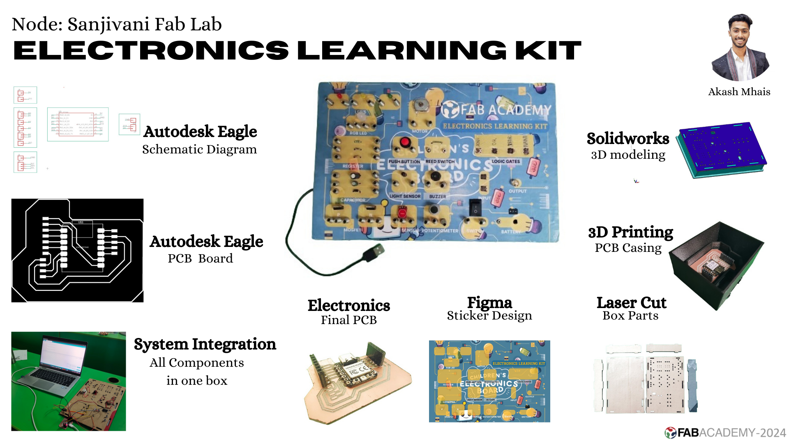

Electronics_Learning_Kit
A modular engineering platform designed to lower the barrier for electronics education. Built on the RP2040 XIAO MCU with synchronized magnetic sensors and a multi-layered structural chassis.
Technical_Summary
Module Index
- RP2040 Base Station
- OLED Graphic Module
- Environmental Sensors
- Actuation Units
01_Hardware_Architecture
The kit is centered around a custom-designed PCB hosting the XIAO RP2040. It features a standardized 4-pin interface for modular components, supporting I2C, UART, and PWM signals through a unified snap-on system.

// Modular_Ecosystem
Integration of the main chassis with 3D printed sensor enclosures. The design prioritizes visual transparency to allow students to see the underlying circuit traces and component layouts.
Fabrication_Methods
The chassis is a hybrid construction of 3mm acrylic and 3D printed PLA. The PCB was fabricated using CNC milling for maximum precision and rapid iteration.
Embedded_System
Leveraging the dual-core RP2040 for low-latency sensor polling. Firmware is implemented in C++ with a custom driver layer for the snap-on OLED and ultrasonic modules.
02_Industrial_Design
Beyond functionality, the Electronics Learning Kit was designed with a focus on ergonomics and safety. All electrical contacts are recessed, and the modular units use keyed connectors to prevent reverse-polarity damage during student experiments.